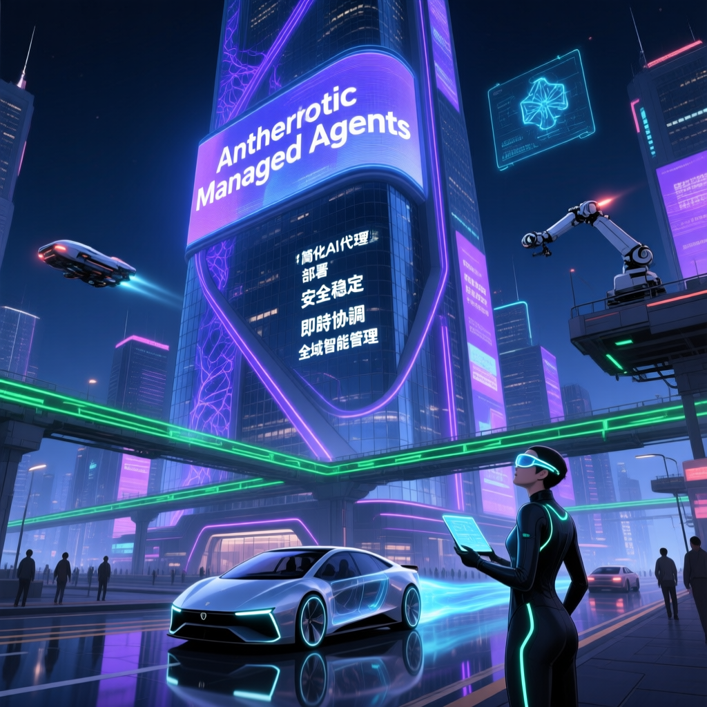
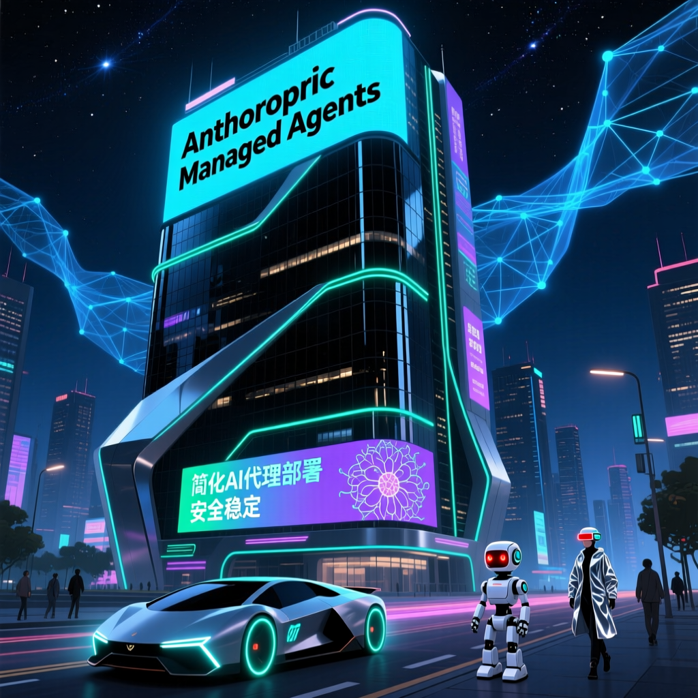

近期，AI公司Anthropic推出了一項名為Managed Agents的新功能，旨在簡化AI代理的部署和管理過程。這一舉措引發了業界廣泛關注，有人認為這將對現有的AI初創企業構成威脅。


Managed Agents 的五大核心優勢與限制
Anthropic Managed Agents 的出現，讓「殺死1000家Agent Startup」不再是誇張說法。對於希望快速部署AI代理的企業而言，這是一個值得考慮的選項；但對於需要高度定製化的場景，傳統方案可能更為適合。
本次報告深入解析了Anthropic推出的Managed Agents的功能、優缺點以及其在市場中的定位。研究指出，Managed Agents具有簡易上手、安全性和穩定性等優點，但也存在平台綁定度高、缺乏自動排程功能等局限。
相較於其他競品如Claude Code、n8n，Managed Agents在不同場景下各有優劣。n8n在排程功能上更成熟，支援內建Cron、Webhooks、重試邏輯及執行歷史；而Claude Code則在部署簡易性上更具優勢。
| 功能維度 | Managed Agents | Claude Code | n8n | Cron/L龙蝦人 | Mage |
|---|---|---|---|---|---|
| 部署速度 | 15分鐘 | 1-2小時 | 數小時 | 數小時 | 數小時 |
| 自動排程 | ❌ 無 | 有限 | ✅ 完整 | ✅ 完整 | ✅ 完整 |
| 定製彈性 | 中等 | 高 | 高 | 高 | 高 |
| 定價模式 | $18/小時 | 代碼用量計費 | 免費/雲端版 | 免費/開源 | 開源 |
| 適合用戶 | 企業快速部署 | 開發者進階使用 | 技術團隊自托管 | 開源愛好者 | 開發者 |
根據官方公告，Managed Agents按照執行時間收費，每小時費用為18美元，並且支援Web搜尋等附加功能。目前已有Notion、Rapodon等多家知名企業開始採用此服務來提升工作效率。例如，Notion在其工作空間內整合了Agents以自動處理任務；而Rapodon更是在產品開發、銷售等多個部門部署了Agents，據稱每個Agent從設定到上線僅耗時一週。
面對日益激烈的競爭格局，各AI巨頭紛紛加碼佈局，力求在市場中佔據有利位置。對於消費者來說，最重要的是根據自身需求選擇最合適的工具而非盲目追隨潮流。隨著技術不斷進步和完善，預計未來將出現更多針對特定場景最佳化的AI解決方案，推動整個行業向更高水平發展。
專家建議根據具體需求選擇合適的工具，而不必盲目跟風。Managed Agents雖然提供了便捷的上手體驗和良好的安全性保障，但其依賴於特定模型且缺乏基本的自動排程能力成為了主要短板。